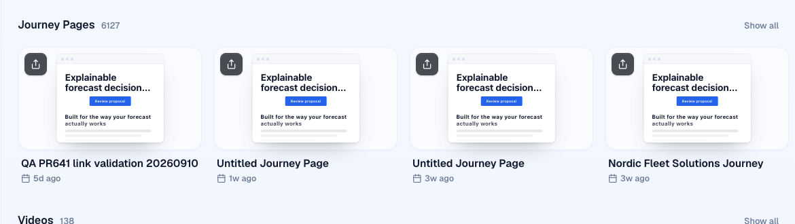
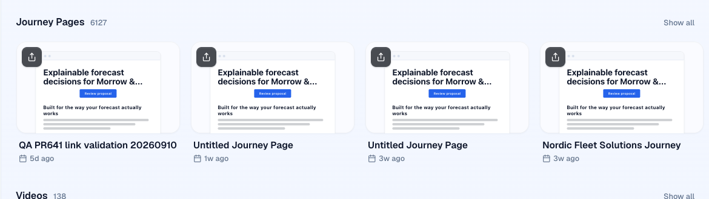

Same cards, same outline (Explainable Forecast Proposal), local editor on the branch. On the preview switch with ?pages=float and ?pages=bleed; the choice sticks for the session.
A small window with its own shadow and a fade at the bottom.

A wider, taller page anchored near the top; the card's bottom edge crops it. No fade.
